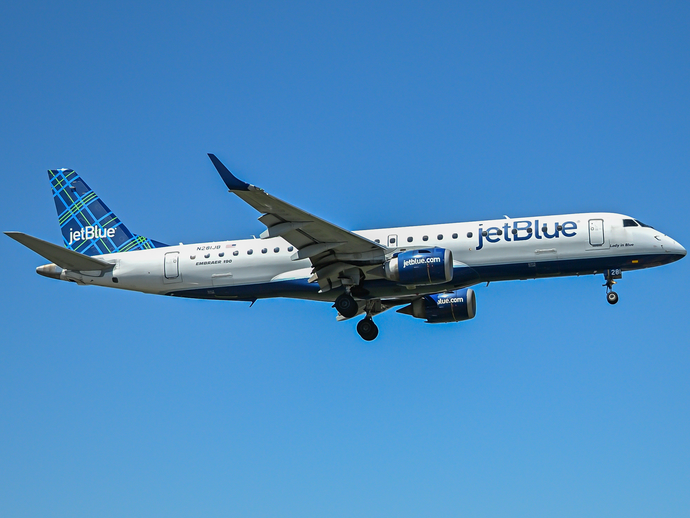

JetBlue Retires the Embraer E190 – Final Flight Marks End of U.S. Service

Published September 10, 2025
On September 9, 2025, JetBlue Airways officially retired the Embraer E190 from its fleet. The last flight took place between New York John F. Kennedy International Airport and Boston Logan International Airport.
This event closed nearly twenty years of service for the type in the United States. After this retirement, no U.S.-based airline will operate the E190 in scheduled service.
Impact on U.S. Aviation
With JetBlue’s retirement of the E190, no major U.S. airline now flies the type in scheduled service.
This marks the end of a chapter in American aviation where the E190 helped connect small and medium cities to large hubs.
Other Airlines and the E190
While some E190s remain active worldwide, including in South America, Europe, and Asia, the type no longer serves in regular schedules with U.S.-based carriers.
This highlights how quickly airlines in the United States have shifted toward larger, more efficient jets like the A220.
Closing Summary
The JetBlue E190 story has now ended. The aircraft helped JetBlue grow for two decades, serving short-haul routes and new markets.
The retirement flight on September 9, 2025, commanded by Warren Christie, closed this chapter with a symbolic full circle moment.
From now on, JetBlue will rely on the Airbus A220-300 and Airbus A320 family as its smallest and core narrow-body aircraft.